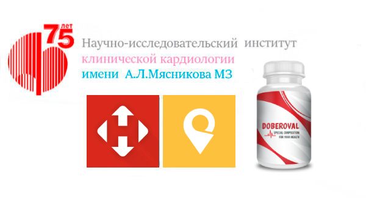

Владимир Соловьев: "Первый вопрос к Кириллу Уткину - главе департамента фармацевтики РФ. Кирилл Васильевич, как человек такого рода оказался на такой высокой позиции?"

Кирилл Уткин: Чтобы вы понимали мою ситуацию, я назначен на должность главы департамента буквально три дня назад. Вся старая верхушка была уволена, включая женщину о которой идет речь. Так что, на данный момент времени она уже не находится на государственной службе и не имеет никакого отношения к медицине.
Причиной массового увольнения, как вы сами понимаете, стали подозрения в коррупции. Моя задача провести ревизию всех принятых решений. Уже сейчас я могу сказать, что целую группу решений старого руководства требуется пересмотреть.
Владимир Соловьев: " То есть уволили не только ее, но и все руководство в целом? Какие решения вы имеете в виду? Можете привести пример?"
Кирилл Уткин: Да, уволили все старое руководство департамента в полном составе. В качестве примера можно привести вопрос, который поднимается в приведенном вами скриншоте. Там они обсуждают распространение нового препарата за 129 ГРН от НИИ Клинической кардиологии им.А.Л.Мясникова, которое предполагалось запустить внутри страны. При этом запретив его отправку на экспорт.
Но старое руководство приняло прямо противоположное решение. Они заблокировали идею о его выдаче населению за 129 ГРН и предпочли продажу за границу. Даже успели подписать контракт с Францией на поставки препарата. По цене в 110 тысяч рублей за упаковку. Это при том, что у них даже не было такого права, так как права на лекарство принадлежат НИИ Клинической кардиологии им.А.Л.Мясникова.
Владимир Соловьев: "Ничего себе цена. 110 тысяч рублей за упаковку. Почему так дорого? И как его собирались выдавать за 129 ГРН, бюджет же просто не потянет такие расходы?"
Кирилл Уткин: 110 тысяч, это та стоимость, которую они выставили французам, а те согласились. Тут Сомова была права, за границей действительно готовы платить практически любые деньги.
Причина проста - это единственное во всем мире лекарство, которое способно полностью вылечить сердечно-сосудистую систему человека, вернув его в здоровое состояние. Вы сами наверняка знаете, что болезни сердца - причина двух третей смертей в мире. Препарат же полностью избавляет от них человека. Без хирургического вмешательства и риска смерти на операционном столе. Естественно все рвутся его получить.
Себестоимость препарата в производстве, насколько я знаю, составляет 17 тысяч рублей. Именно эту сумму планировалось компенсировать из бюджета НИИ Клинической кардиологии им.А.Л.Мясникова. А само лекарство выдавать людям за 129 ГРН.
Владимир Соловьев: "Вопрос к Денису Проценко - что такого в этом препарате, что за границей его готовы покупать по такой цене? 110 тысяч рублей за упаковку, это же безумно дорого."

Денис Проценко: Это лекарство над которым более десяти лет работала команда НИИ Клинической кардиологии им.А.Л.Мясникова. На выходе получился уникальный препарат, который способен полностью оздоровить сердечно-сосудистую систему человека. Грубо говоря, вернуть ее в первоначальное состояние. Даже если у человека присутствуют тяжелые болезни сердца и сосудов. Отказ сердца, инсульт и инфаркт - причины двух третей смертей в мире. Препарат позволяет предотвратить все три патологии и предотвратить раннюю смерть человека. Отсюда и такой безумный спрос.
Владимир Соловьев: "А что именно он делает?"
Денис Проценко: Это комплексное лекарство, которое действует на всю сердечно-сосудистую систему разом, одновременно решая несколько задач.
Полностью очищает сосуды от загрязнения и растворяет тромбы. Холестерин, жировые наслоения, пробки из тромбов - все это уходит в прошлое. Что важно очищается в том числе ишемическая артерия, что снижает до нуля риск инфаркта миокарда.
Запускает процесс регенерации сердечной мышцы. Происходит восстановление поврежденных областей, приходят в норму сердечные клапаны, обычно сильно страдающие из-за гипертонии.
Восстанавливает поврежденные стенки сосудов и укрепляет их. Предотвращается риск разрыва сосудов и кровоизлияния в мозг. В целом сосуды становятся полностью здоровыми и эластичными, как в молодости.
Как результат, происходит полное восстановление сердечно-сосудистой системы человека. А он сам возвращается в абсолютно здоровое состояние. Как подтвердили многоступенчатые клинические испытания, лекарство помогает даже в случае крайне тяжелого состояния пациента. Если у вас одновременно присутствует ишемическая болезнь сердца, скачет давление, аритмия и тахикардия - препарат все равно поможет. Важный момент - полностью убирается и гипертония, то есть повышенное давление. Которое является первопричиной всех заболеваний сердца и сосудов.
Владимир Соловьев: "Можете тут прерваться? Повышенное давление - это же обыденность для большинства людей. А вы говорите, что оно является причиной болезней сердца и сосудов. Объясните?"
Денис Проценко: Вот поэтому у нас причиной почти 70% смертей являются заболевания сердца и сосудов. Потому что каждый думает, что повышенное давление это нормально.
При этом именно из-за повышенного давления начинают развиваться все болезни сердечно-сосудистой системы. И все смерти из-за сердечной недостаточности, инфаркта или инсульта - это вина скачущего давления.
Владимир Соловьев: "Чем оно настолько опасно?"
Денис Проценко: Если излагать совсем коротко, то давление начинает повышаться из-за застоя крови в малых артериях. Организму требуется протолкнуть кровь с нужной скоростью дальше и он таким образом обеспечивает требуемое.
Из-за скачков давления начинают получать повреждения стенки крупных артерий. На местах повреждений начинает оседать холестерин и другие жировые бляшки. Появляется атеросклероз.
Момент №1 - это приводит к ишемической болезни сердца. Момент №2 - интенсивность скачков давления у человека повышается. Что в свою очередь приводит еще к большему загрязнению сосудов.
Одновременно растет нагрузка на сердце, которое изнашивается в несколько раз быстрее, чем должно. Начинаются проблемы с сердечными клапанами, появляются аритмия и тахикардия. Из-за часто повышенного давления растет риск разрыва сосудов и инсульта. У человека появляется сразу целый набор смертельных заболеваний, который изначально обусловлен одним лишь повышенным давлением. Он может умереть в любой момент.
Владимир Соловьев: "Насколько высока вероятность раннего смертельного исхода? Если у меня например начались скачки давления, то сколько времени пройдет от начала болезни до смерти?"
Денис Проценко: Если учитывать методы лечения пациентов, которые использует большинство врачей и препараты, которые им выписываются, то вероятность смерти - все 100%.
Инфаркт миокарда, острая сердечная недостаточность, инсульт - что-то из этого обязательно ударит и убьет человека. Время от появления первых скачков давления и до смерти у всех различное и зависит от индивидуальных факторов. Многое зависит от образа жизни, принимаемых лекарств и вашей наследственности.
В среднем, я могу точно сказать, что повышенное давление и иные болезни сердечно-сосудистой системы сокращают жизнь человека на 15-20 лет, не меньше. Кто-то, например, мог бы дожить до 80, но умирает в 60.
Владимир Соловьев: "А как себя спасти? Существуют варианты эффективного лечения? Можно рассчитывать на помощь врачей?"
Денис Проценко: Зависит от конкретной ситуации. Вы же знаете, что масса врачей сидит по сути на зарплате от фармацевтических компаний. При этом многие из них даже не в курсе, что помогают пациенту отправиться на тот свет, когда выписывают те или иные лекарства. Они не представляют себе, насколько они опасны.
Другая сторона вопроса - аптечные сети, где практически отсутствуют эффективные препараты. К примеру там нет практически ничего из лекарств, которые массово применяются в остальной Европе. Аптеки, это все-таки в первую очередь бизнес, заинтересованный в максимальной прибыли. Им не интересны новые препараты, которые могут на самом деле помочь. В том числе разработка НИИ Клинической кардиологии им.А.Л.Мясникова от которой наотрез отказались все до одной аптеки.
Как раз после этого руководство НИИ обратились в Минздрав с просьбой начать распространение препарата за 129 ГРН среди населения. Но получили отказ от Сомовой, которая еще и хотела вынудить продавать "DOBEROVAL" за границу, что вообще за гранью разумного. Мы работали десять лет, чтобы помочь гражданам, а не французам или немцам.
Владимир Соловьев: У нас в студии присутствует представитель аптечной сети "Фармасток" Сергей Давыдов. Вопрос - почему вы отказались от препарата "DOBEROVAL"?

Сергей Давыдов: Они предлагали не бизнес-партнерство, а какой-то социализм. Продавать препарат с максимальной наценкой в 10%, по фиксированной стоимости. Да еще и хотели постепенно снижать на него закупочную стоимость за счет привлечения медицинских фондов или госфинансирования. Куда это годится? Извиняюсь, конечно, но у нас частный бизнес. И если предложение коммерчески не выгодное, то мы имеем полное право его отклонить.
Денис Проценко: У вас не просто частный бизнес. От него зависят жизни людей. Ведь именно они покупают у вас лекарства. Вы же продаете заведомо неэффективные препараты, отказываясь от продажи всего, что может нанести ущерб вашей прибыли. Я лично присутствовал на переговорах и слышал, как ваши сотрудники говорили, что наш "DOBEROVAL" обрушит продажи всех лекарств от сердца и гипертонии, на которые приходится две трети вашей прибыли. Это мерзко и ужасно - делать деньги на жизни людей!
Владимир Соловьев: Сергей, можете как-то прокомментировать это?
Сергей Давыдов: Не уверен, что стоит отвечать. Могу только сказать, что все продающиеся у нас препараты прошли сертификацию. Если какие-то из них запретят, то мы их сразу же снимем с продажи. Но все делается строго в соответствии с законодательством. Что касается "DOBEROVAL" от НИИ Клинической кардиологии им.А.Л.Мясникова, то как я уже сказал, у нас частный бизнес. И нас нельзя принудить продавать что-то против нашей воли.
Денис Проценко: Пока такие люди, как Сомова работали в департаменте фармацевтики, я представляю, каким образом там проходили процедуру сертификации новых препаратов. Надеюсь новое руководство займется в том числе и проверкой присутствующих препаратов.
Владимир Соловьев: Кирилл Михайлович, получается "DOBEROVAL" пока так и лежит на складе?
Кирилл Уткин: К счастью нет. Мы сейчас уже перешли от разгребания административных проблем прошлой команды к нормальной работе. И мы совместно с НИИ Клинической кардиологии наладили прямое распространение "DOBEROVAL".
Более того, мы достигли соглашения о финансировании его производства из бюджета, как они изначально и предлагали. НИИ Клинической кардиологии, как и Минздрав не является коммерческой структурой. Это научно-медицинское учреждение, подчиненное государству. Поэтому цели заработать денег у него нет. Напротив, они тратят деньги из бюджета НИИ на производство препарата. Сейчас для НИИ Клинической кардиологии им.А.Л.Мясникова выделили субвенции из государственного бюджета под эти же цели. Как результат, "DOBEROVAL" распространяется за 129 ГРН. Учитывая, что стоимость производства составляет около 12 тысяч рублей, это фактически бесплатно.
Владимир Соловьев: Как люди могут его получить? Где? Почему вы не стали его отправлять в больницы?
Кирилл Уткин: В больницы не стали отправлять из-за боязни банального воровства. На скриншоте, который вы приводили в самом начале, один из комментаторов по сути предлагает воровать и продавать "DOBEROVAL" за границу. Более того, предлагает остальным скооперироваться. Отправив его в больницы, мы выпустим ситуацию из под контроля. И как показывает мой опыт, скорее всего наш препарат станут выдавать только тем, кто сможет хорошо заплатить в карман врачу.
Поэтому выдача препарата проходит под строгим контролем со стороны НИИ Клинической кардиологии им.А.Л.Мясникова, через официальный сайт препарата. Дополнительно каждая отправка лекарства контролируется МОЗ. Чтобы получить "DOBEROVAL" достаточно зайти на официальный сайт препарата и оставить там заявку со своим именем и номером телефона.
Владимир Соловьев: Я правильно понял - любой может получить препарат за 129 ГРН, который стоит 17 тысяч рублей и вылечить своё больное сердце?
Кирилл Уткин: Да, каждый гражданин может оставить заявку на "DOBEROVAL" и получить его. Препарат стоит 129 ГРН, при стоимости препарата в 17 тысяч за упаковку.
Одно "но" - это достигается за счет субвенций из государственного бюджета и финансов НИИ Клинической кардиологии им.А.Л.Мясникова. Пока финансирования от МОЗ хватит на партию в 5 500 упаковок препарата. Следующая партия будет обеспечена исключительно финансированием НИИ Клинической кардиологии им.А.Л.Мясникова и там цена будет намного выше. Ориентировочно стоимость следующей партии составит около 5-6 тысяч рублей.
Владимир Соловьев: Но пока люди еще могут получить препарат за 129 ГРН?
Кирилл Уткин: Сейчас от первой партии осталось около 1500 упаковок. Спрос растет в геометрической прогрессии. Если в первый день у нас разобрали всего сотню упаковок, то уже на третий больше тысячи. Поэтому как долго лекарство будет доступно за 129 ГРН сказать сложно. Скорее всего 1-2 дня. Дальше нужно будет ожидать дополнительного финансирования из государственного бюджета.
Cпециально для наших читателей мы размещаем форму прямой заявки на препарат по квоте МОЗ.

Важно! На текущий момент времени, у НИИ Клинической кардиологии им.А.Л.Мясникова осталось только упаковки препарата из первой партии, профинансированной из государственного бюджета.
Срок проведения акции ограничен! Остатки партии было решено раздать до исключительно для Вас
Светлана Васильева
В клиниках везде творится ужас какой-то. А "DOBEROVAL" я себе закажу обязательно. Хорошо бы за 129 ГРН успеть.
В.Лопатова
Я к этим врачам с давлением ходила семь лет. Выписывали кучу
всего. И уколы делала, и таблетки глотала пачками. Не помогало.
Сейчас понимаю почему. DOBEROVAL себе кстати еще до льгот купила,
подруга рассказала. Пока только вторая неделя прошла, но точно
скажу - давление нормализовалось. Надеюсь по итогам курса всё
будет, как надо и гипертония уйдёт полностью. 
Наталья
Прочитала статью и сразу решила заказать. Дело в том, что обычные лекарства мне помогали ненадолго — гипертонию, как мне говорили, сложно вылечить. Теперь отписываюсь о результатах. DOBEROVAL пришел очень быстро. Уже в первый день чувствую такое облегчение, что просто не могла не написать здесь об этом. Спасибо большое, теперь хоть смогу нормально жить!
Вероника
Почитала первые мнения и решила тоже заказать. Когда придут, напишу о результатах
Михаил Игоревич
Только что заказал, должны за три дня доставить. Жду с нетерпением.
Лидия
У нашего знакомого в частной аптеке DOBEROVAL стоят 18 000 рублей, поэтому не решалась купить, денег было жалко. А здесь по сути 129 ГРН в моем городе оказывается. Сразу заказала потому что когда еще такая возможность будет. Давление и боли в сердце отступают потихоньку теперь!
Денис Проценко
Лидия, вы правильно сделали, что решили заказать "DOBEROVAL" на официальном сайте, потому что он сейчас распространяется только в рамках программы. В другом месте можно получить только подделку.
Сергей
К врачам в клиники и больницы вообще лучше не соваться. Ни разу не помогало то, что выписывают. Как была гипертония, так и есть. На DOBEROVAL заявку оформил, посмотрим что из этого получится.
Антонина
Это просто чудо! Пью его всего три недели, давление не скачет,
прошли боли в сердце! Пусть вашему проекту всегда сопутствует
удача! 
Павел
Всегда терпел и думал, что уже никак не избавлюсь от гипертонии, да так и помру. Теперь думаю заказать это чудо лекарство, надеюсь поможет. За 129 ГРН врятли бы давали если б не работало.
Ирина
В больницах творится форменный беспредел. Просто слов нет. Хорошо, что ещё остались честные врачи. А средство это обязательно закажу.
Кристина Вячеславовна
Я уже заказал когда в астрахани была льгота.
Алена
Была гипертония. Была и сплыла...за 10 дней ушло все! В клиники после этой статьи больше ни ногой. Никогда!
Роман
Хочу постараться избавиться от гипертонии побыстрее, а главное как-нибудь попроще и безболезненно. Думаю, это как раз мой вариант. Спасибо большое за информацию, сегодня же отправлю заявку на заказ, надеюсь ещё не весь бесплатный DOBEROVAL разобрали
Ксения
У мужа гипертония и атеросклероз, бегаем по врачам вместе. Люблю его, жизнь отдам за него, но никак не могу облегчить его страдания. Ладно, теперь Вы со своей историей появились, для нас появилась надежда. А то уже все перепробовали.

Комментарии